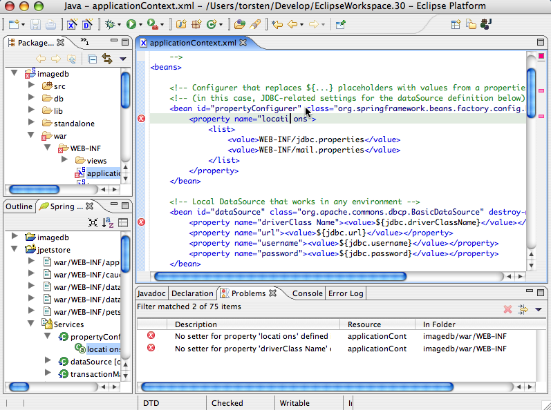

Spring IDE for Eclipse - Beans Configuration Support
This project provides a set of plugins for the
Eclipse platform
to ease working with Beans Factory configuration files of the
Spring Framework.
It consists of the following plugins:
- The plugin org.springframework.ide.eclipse.beans contains Spring-IDE's
legal stuff, an Eclipse welcome page and settings for Eclipse's about dialog.
- The plugin org.springframework.ide.eclipse.beans.core contains additional libraries (Spring's core package
spring-core.jar, Apache Jakarta's commons-logging.jar and the XML parser Xerces).
It provides a Spring-aware project nature with a corresponding incremental builder and a common model for all Spring projects with
their beans config files.
- The plugin org.springframework.ide.eclipse.beans.core.doc contains Spring's reference documentation readable
with the Eclipse help system.
- The plugin org.springframework.ide.eclipse.beans.ui holds a user interface to visualize the core plugin's common
model. It provides a view which displays a tree view of the model for all Spring Beans factory config files,
a special (Spring) project property page and a decorator for Spring projects + config files + bean classes.
- The plugin org.springframework.ide.eclipse.beans.ui.doc contains
Spring IDE's documentation readable with the Eclipse help system
- The plugin org.springframework.ide.eclipse.beans.ui.graph provides a graph view
of Spring Beans factories

Features
- Project nature which extends the Java project nature to support a list of Spring bean factory config files
(defined in project definition file .springBeansProject)
These config files can be combined into sets (aka config sets) which are treated as a bean factory
(Screenshot). A config set may contain config files from other Spring projects too.
These (external) Spring projects have to be selected in the project's property page "Referenced Projects".
Within a config set overriding of beans is detected (if enabled in the corresponding config set's property page) during
validation and decorated with a problem marker.
- Incremental Builder which validates all Spring bean config files defined in the project's .springBeansProject
after modification (e.g. by saving from within an Eclipse editor). For every validation error a corresponding problem
marker is created in Eclipse's task view (Screenshot). The validator performs the
following checks:
- config file is validated against Spring DTD by validating DOM Level 3 Parser (Apache's Xerces)
-> corresponding line numbers are added to every Node (Level 3) of the DOM tree
- RootBean: look-up of specified bean class within the JDT project's classpath via
IProject.findType()
- RootBean: look-up of a corresponding constructor for constructor arguments
- RootBean: look-up of a corresponding set-method for bean property values
- ChildBean: look-up of parent bean
- Config Set: every defined bean is checked for overriding another bean
(has to be enabled in the corresponding config set's property page)
- Image decorator which decorates all Spring projects, their bean config files defined in .springBeansProject
and all Java classes which used as bean classes with a small "S" in the upper right corner
- Menu item with action to toggle Spring Beans project nature on an Eclipse project
(Screenshot)
- Project property page to maintain the config files (Screenshot) and the
corresponding config sets (Screenshot) defined in .springBeansProject
A config set bundles an ordered list of config files and provides the property "Enable bean override"
(Screenshot).
- Context menu actions in any text editor for opening Java type of a bean class (place cursor in class name) or showing bean / property
(place curso in bean id or property name)
- View to display all Spring projects and their Spring bean config files + config sets (Screenshot):
- Double click support -> navigate to corresponding location in config file (config file, config set, bean and bean property)
or open Spring property page (project)
- Show In support -> menu item "Navigate/Show In" navigates to Spring View or selected Spring config file in JDT's
Package Explorer (Screenshot)
- Image decorators which indicate:
- external config files (from project references)
- invalid config files (error)
- singleton beans
- beans which override other beans within the same config set (warning)
- Automatically rerefresh on modification to Spring beans projects -> currently the view's tree is collapsed on refresh
- Property sheet support -> if the property sheet view is open then the properties of a selected Spring view entry are
displayed in the property sheet (Screenshot)
- Read-only editor which displays a graph from all beans defined in a single config file or a config set
(Screenshot)
This editor is opened from the context menu of a config file, config set or a bean in the Beans view. It provides zooming,
hover infos, an outline view and a context menu for the graph's elements. This context menu allows to navigate from a
selected graph node to the corresponding Java type, config file or node in beans view. If a graph node or edge is selected
(indicated by a thick border) the according information are shown in Eclipse property sheet view.
Double-clicking a graph node or edge opens the config file with the corresponding bean or property definition.
The graph can be exported to an image file (currently only BMP and JPEG are supported by Eclipse's image exporter) or
printed (currently transparent GIF images are not supported by Eclipse's printer driver, they are printed as black areas).
The graph editor requires version 2.1.2 (or newer) of Eclipse's
Graphical Editing Framework (GEF). This has to be downloaded and installed
prior to use the Spring Beans Graph plugin!
Requirements
- Java Runtime v1.4 or newer.
- Eclipse platform (v2.1.x or 3.0)
- Runtime-version of Eclipse's
Graphical Editing Framework (GEF) (release 2.1.2 or newer required). You can
download / install it manually or use Eclipse's update manager to load it from the main Eclipse.org update site.
Known Limitations
- Modifying a Spring beans config file refreshes / reloads the whole Spring beans view. The view's tree control is
re-populated and collapsed. No state (selection, uncollapsed nodes) is preserved yet.
- Exporting images from Beans graph editor only supports BMP or JPEG. This is due a known limitation of the current
implementation of Eclipse's
org.eclipse.swt.graphics.ImageLoader.
- Printing the Beans graph editor does not support transparent GIF images. This is due a known limitation of Eclipse's
current print facility.
Installation
Online updates (via Elipse's Update Manager) are available on
http://springframework.sourceforge.net/spring-ide/eclipse/updatesite/.
Define a new update site in Eclipse's Update Manager view (Screenshot), navigate to the
update site via this bookmark (Screenshot) and install both features. You can check if
the plugins are installed by clicking on the Spring logo in Eclipse's about dialog (Screenshot).
This update site (updatesite_x.x.x.zip) can also be downloaded from
http://springframework.sourceforge.net/spring-ide/eclipse/updatesite/
and used locally.
To use the Beans graph editor (introduced with release 1.0.1) you have to install the runtime-version of Eclipse's
Graphical Editing Framework (GEF) (release 2.1.2 or newer required)!
Usage
Migration from SpringUI
- Delete SpringUI feature
- stop Eclipse
- delete SpringUI feature org.springframework.eclipse_x.x.x and plugins
org.springframework.eclipse.*_x.x.x from your Eclipse feature directory
<eclipse install path>/features/ and plugin directory
<eclipse install path>/plugins/
- restart Eclipse
- Migrate existing SpringUI project
- select open Spring UI project nodes in Eclipse resource navigator or JDT package explorer
- activate context menu item "Migrate SpringUI Project" on selected projects
-> these projects are now converted to Beans projects (SpringUI project definition file .springProject
is converted to new Beans project definition file .springBeansProject, SpringUI's project nature and
builder are removed from Eclipse project definition file .project, SpringUI's problem markers are
deleted from Beans config files defined in SpringUI project definition file)
Fresh Installation
- Add Spring Beans project nature
- select open project nodes in Eclipse resource navigator or JDT package explorer
- activate context menu item "Add Spring Beans Project Nature" on selected projects
-> these projects are now decorated with a small 'S' in the upper right corner (overwriting other decorators,
e.g. Java project decorator 'J')
- Add references to other Spring projects
- open project's properties dialog in Eclipse resource navigator or JDT
package explorer
- select the properties page "Project References" from the list
- select Spring project(s) containing Spring Beans config files which are referenced from within in this project's
Spring Beans config sets
- Add Spring Beans factory config files
- open project's properties dialog in Eclipse resource navigator or JDT package explorer or via double-clicking
a project in the Spring Beans view
- select the properties page "Spring Beans Project" from the list
- use button "Add..." to open a selector dialog and select all Spring Beans config files
-> added Spring Beans config files are decorated with a small 'S' in the upper right corner
- (optionally) combine config files into config sets with the second tab of the property page (use "New..." to
create a new config set and select the config files; use "Move Up" and "Move Down" to change the order of the
config files)
- Open Spring Beans view
- select from within any of the added Spring Beans config files opened in an Eclipse editor the menu item
"Navigate/Show In/Spring Beans"
-> Spring Beans view is opened and the corresponding Spring Beans config file is selected in the view's model
- Double clicking on an entry in the view navigates to the corresponding location in the config file
- Validate Spring Beans config file
- save any of the added Spring Beans config files from within an open Eclipse editor
-> all errors occured during validation create a problem marker in Eclipse's task view
Resources

{kind=link}
{kind=link}
{kind=link}
{kind=link}
{kind=link}
{kind=link}
{kind=link}
{kind=link}
{kind=link}